Коллектив
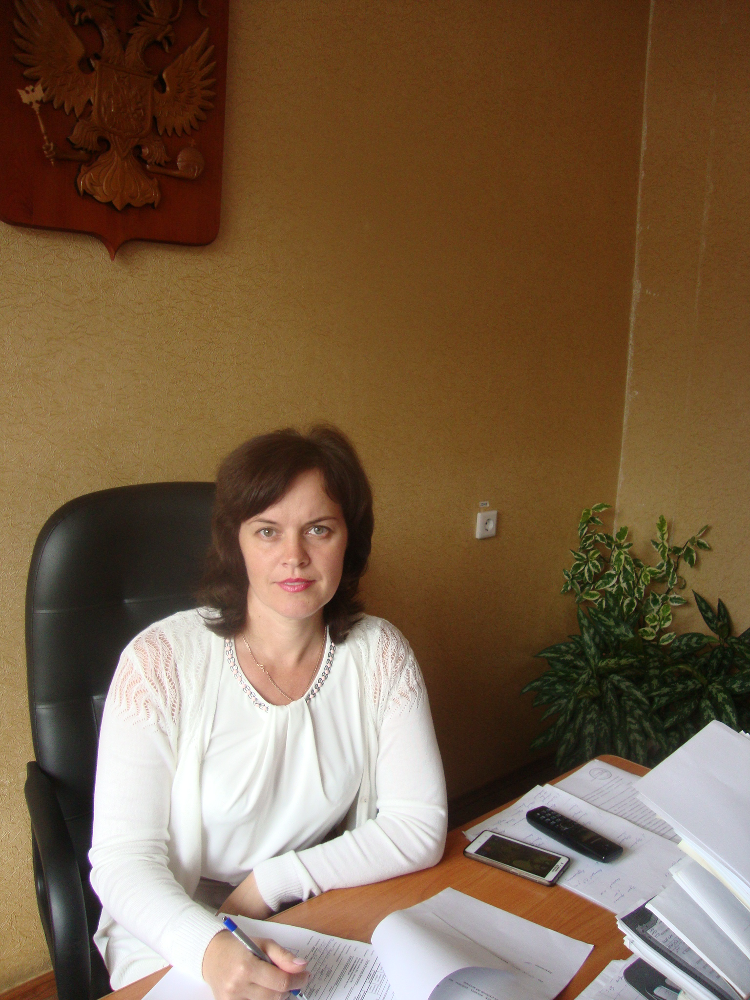
Негорелова Ольга Владимировна
Начальник
КОГБУ “Яранская межрайонная станция по борьбе с болезнями животных”

Стариков Александр Сергеевич
Юрисконсульт
КОГБУ “Яранская межрайонная станция по борьбе с болезнями животных”
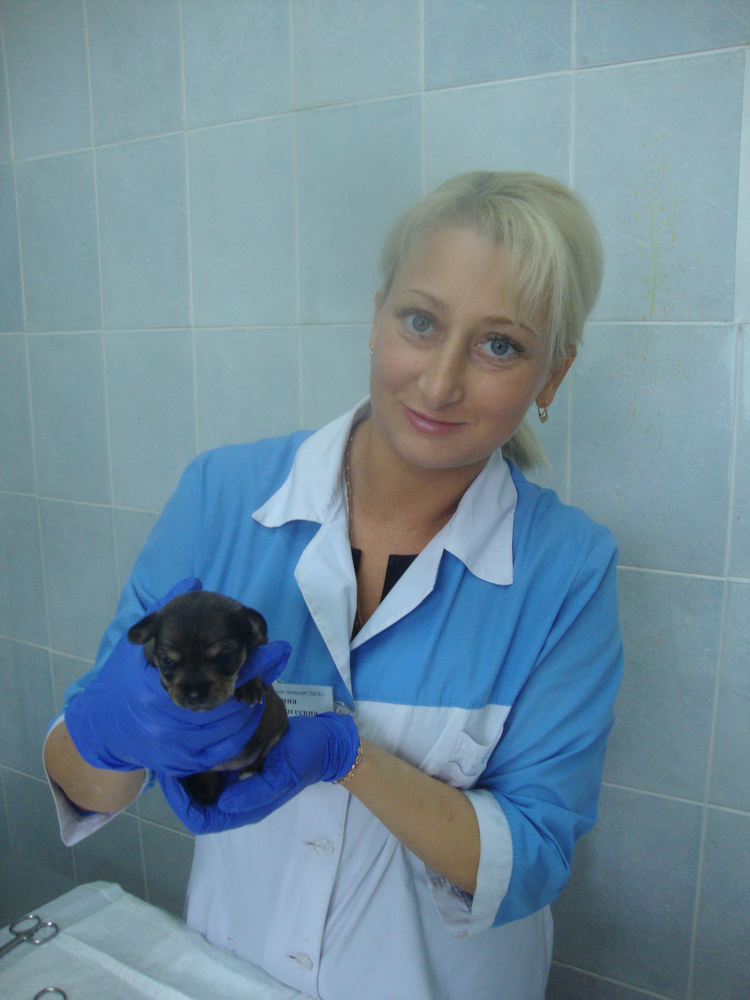
Рокина Елена Сергеевна
Заместитель начальника по лечебной работе
КОГБУ “Яранская межрайонная станция по борьбе с болезнями животных”

Кравченко Елена Юрьевна
Заместитель начальника по лабораторной работе
КОГБУ “Яранская межрайонная станция по борьбе с болезнями животных”

Костерина Ольга Викторовна
Главный специалист системы менеджмента качества
КОГБУ “Яранская межрайонная станция по борьбе с болезнями животных”
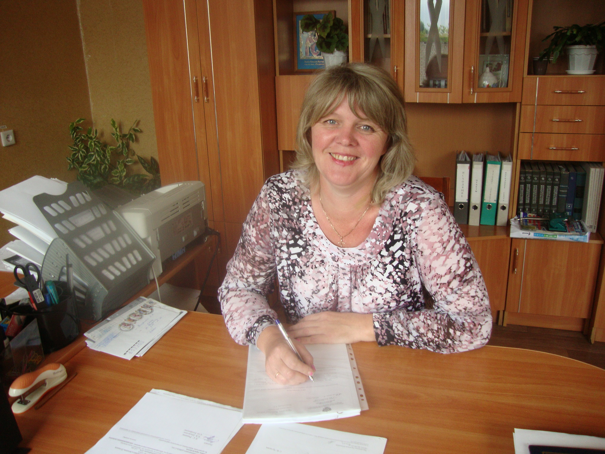
Винокурова Елена Владимировна
Главный бухгалтер
КОГБУ “Яранская межрайонная станция по борьбе с болезнями животных”
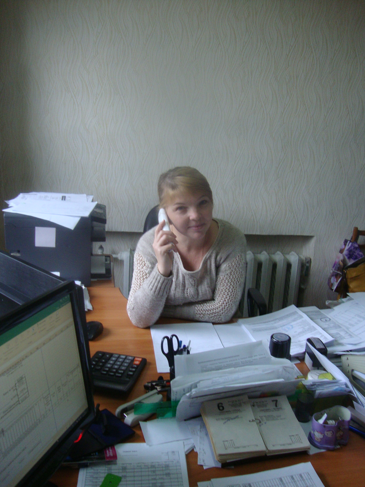
Микерина Ирина Николаевна
Ведущий бухгалтер
КОГБУ “Яранская межрайонная станция по борьбе с болезнями животных”
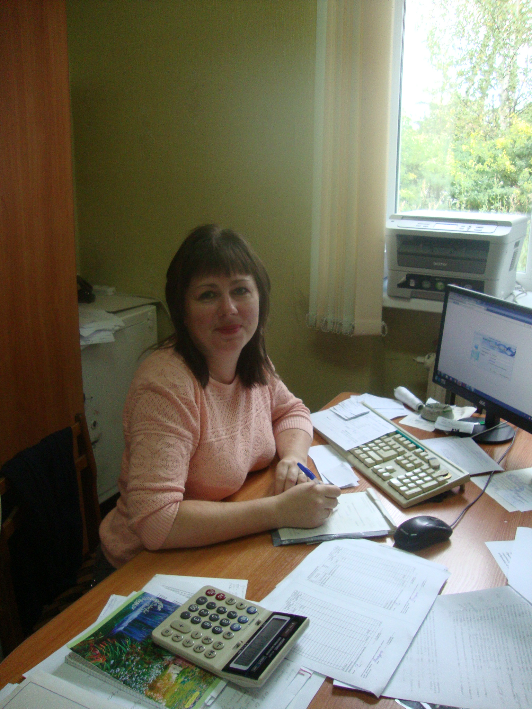
Тушенцова Галина
Бухгалтер
КОГБУ “Яранская межрайонная станция по борьбе с болезнями животных”
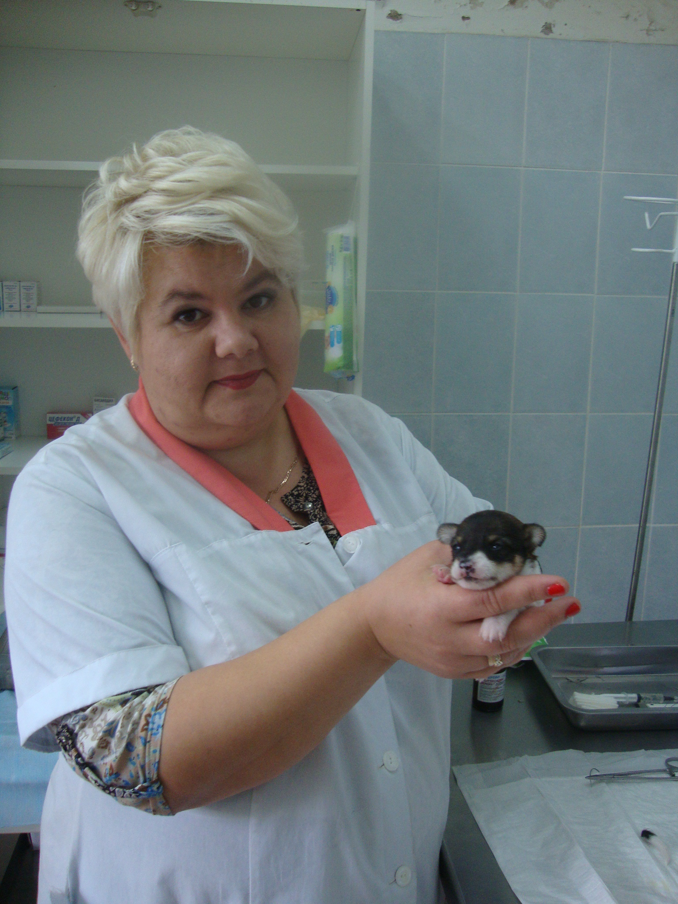
Шалагина Елена Владимировна
Ветеринарный врач-эпизоотолог
КОГБУ “Яранская межрайонная станция по борьбе с болезнями животных”
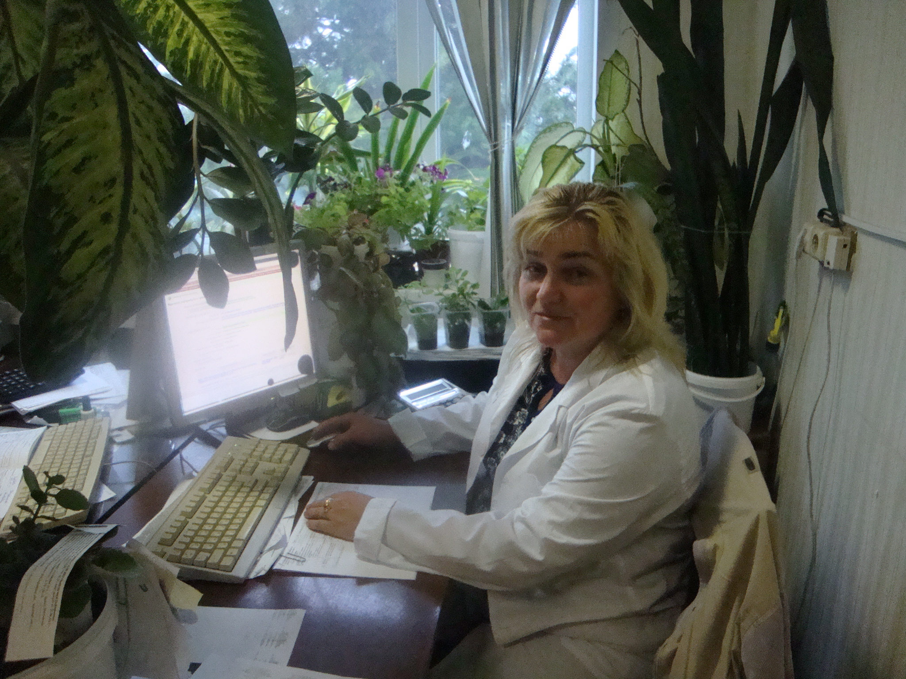
Зимина Евгения Леонидовна
Ветеринарный врач
КОГБУ “Яранская межрайонная станция по борьбе с болезнями животных”

Захарова Наталья Николаевна
Ветеринарный фельдшер
КОГБУ “Яранская межрайонная станция по борьбе с болезнями животных”

Епифанова Екатерина Михайловна
Ветеринарный фельдшер
КОГБУ “Яранская межрайонная станция по борьбе с болезнями животных”

Шерстобитова Наталья Ивановна
Ветеринарный врач-серолог
КОГБУ “Яранская межрайонная станция по борьбе с болезнями животных”
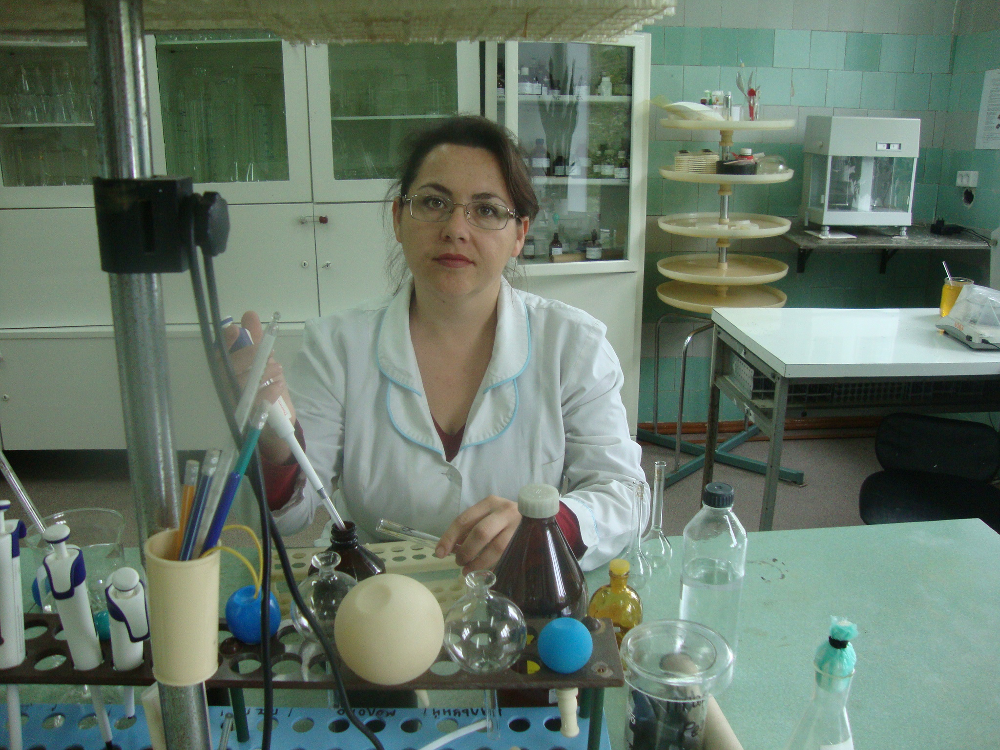
Домрачева Нина Николаевна
Химик
КОГБУ “Яранская межрайонная станция по борьбе с болезнями животных”
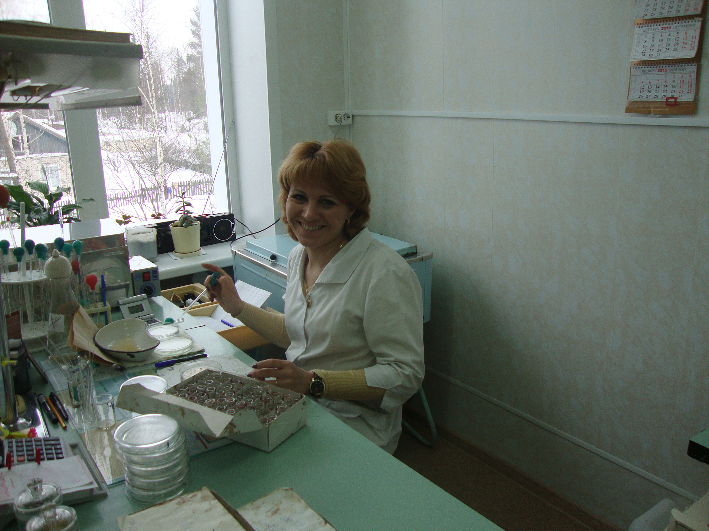
Пигалина Марина Геннадьевна
Лаборант
КОГБУ “Яранская межрайонная станция по борьбе с болезнями животных”
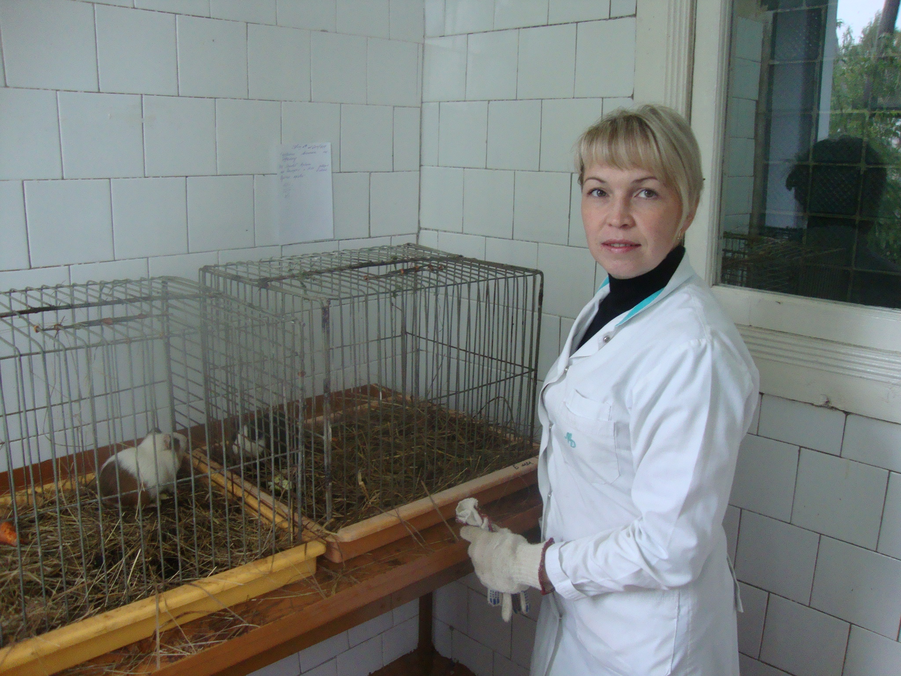
Долгомирова Ольга Вадимовна
Лаборант
КОГБУ “Яранская межрайонная станция по борьбе с болезнями животных”
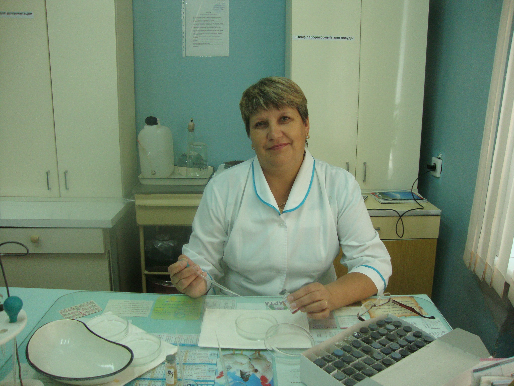
Безденежных Ольга Анатольевна
Лаборант
КОГБУ “Яранская межрайонная станция по борьбе с болезнями животных”

Демина Нина Феогеновна
Заведующая
Кикнурской УВЛ

Суханов Александр Владимирович
Ветеринарный врач
Кикнурской УВЛ

Наумов Алексей Николаевич
Ветеринарный врач-эпизоотолог
Кикнурской УВЛ

Селезнева Наталья Вениаминовна
Ветеринарный фельдшер
Кикнурской УВЛ